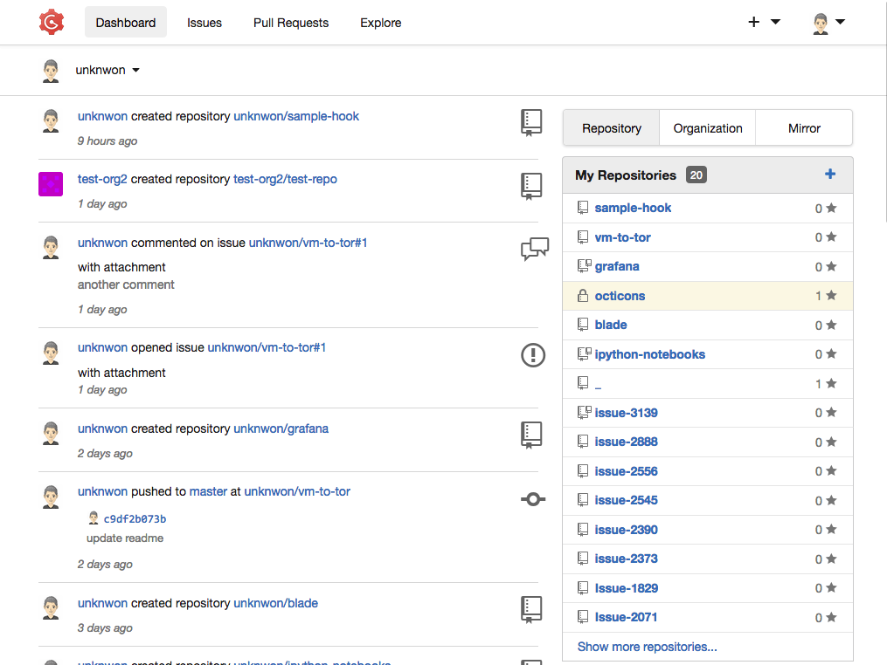
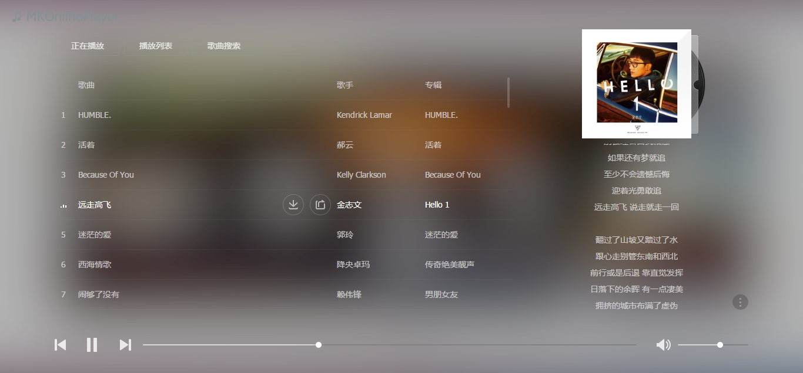

Felix.ma
Vector
2018.04

一款极易搭建的自助 Git 服务。
Gogs是一款类似Github(国内有码市)的开源文件/代码管理系统
Gogs
Go
Link
在线音乐播放器
2018.04

是一款开源的基于 Meting 的在线音乐播放器。
具有音乐搜索、播放、下载、歌词同步显示、个人网易云音乐播放列表同步等功能。
Author : mengkunsoft
GitHub
Python
Link